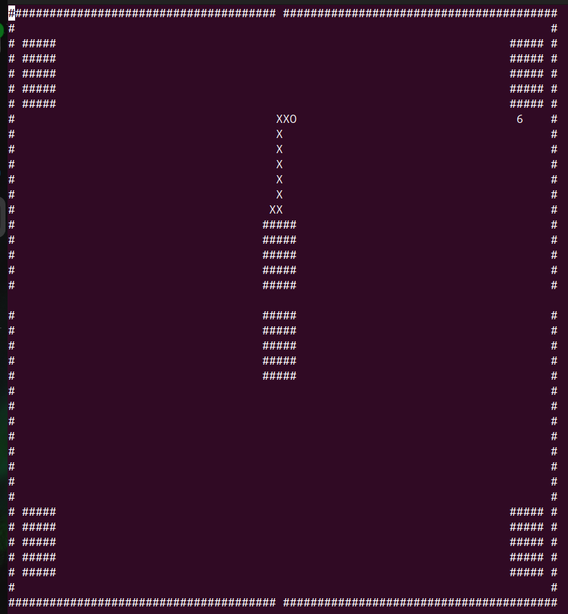

Description globale
Pour un projet universitaire pendant ma 1ere année de BUT j'ai automatisé et optimisé un jeu Snake. En binome, nous essayons de réduire au maximum le nombre de déplacement du serpent et le temps mis par le programme a être executé par le processeur.
Les grandes étapes
- Implémentation de base de l’algorithme autonome simple pour déplacer le serpent vers les pommes.
- Amélioration de la stratégie de déplacement pour optimiser le nombre de déplacements.
- Gestion de nouvelles contraintes de jeu et adaptation de l’algorithme.
- Dernière version prenant en compte toutes les contraintes précédentes avec optimisation finale.
Mes acquis
- Maitrise langage C
- Esprit d'équipe
- Communication
Les outils utilisés
- Langage C
- Visual Studio Code
...
Résultat final

...
...
...
...